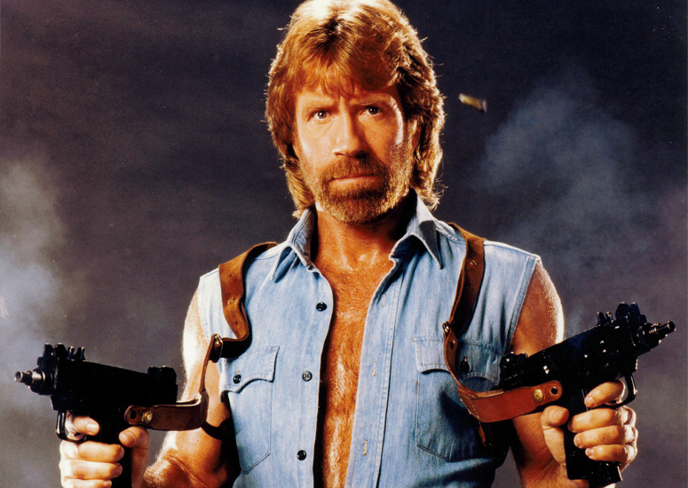

Biographie (From Wikipedia)
L'enfance

Carlos Ray Norris, plus connu en tant que Chuck Norris, est un acteur américain né le 10 mars 1940 à Ryan (Oklahoma). Spécialiste en arts martiaux, il s'est essentiellement consacré au cinéma d'action. Natif de Ryan dans l'Oklahoma, Carlos Ray Norris
a deux frères cadets dont l'un est le producteur hollywoodien Aaron Norris. Ses parents sont de souche amérindienne (cherokee) et irlandaise. Ses parents divorcent alors qu'il a 16 ans et il déménage en Californie avec sa mère et ses frères. C'est là
qu'il finit ses études au lycée et se marie rapidement avec sa petite amie, Diane Holechek.
Spécialiste en arts martiaux, chuck a fait des choses
L'armée
Après son mariage, il rejoint l'US Air Force et est envoyé faire son service militaire à la base d'Osan, en Corée du Sud. C'est là qu'il acquiert le surnom de Chuck et qu'il commence à apprendre le Tangsudo. Il retourne ensuite aux États-Unis,
dans la base de March, en Californie. Il termine ses services à l'armée en août 1962 sans avoir pris part à un autre combat que les entraînements de la base.
Les sports de combats
À son retour, il travaille pour la société Northrop Grumman et ouvre une école de Karaté fréquentée par de nombreuses célébrités, dont Steve McQueen. Son fils Mike naît en 1963 suivi par sa fille Dina en 1964 et d'un second fils, Eric, en 1965.
Le palmarès de Chuck est impressionnant :
- Il possède une ceinture noire en Tangsudo et en Taekwondo,
- il est le fondateur du Chun Kuk Do (La voie universelle).
- Il a également pratiqué le Karaté(7 fois champion du monde des poids moyens de 1968 à 1974)
- il a aussi fait du Judo et du Ju-jitsu
Le cinéma
L'année 1964 marque un tournant dans la vie de Chuck Norris quand il rencontre Bruce Lee.

Malgré une amitié affichée entre les deux hommes, il semble cependant que leurs relations ont été parfois tumultueuses. En 1968, Norris devient champion de Karaté dans la catégorie poids moyen, et en 1969, il remporte la triple couronne en Karaté
pour le record des tournois remportés dans l'année, et le titre de combattant de l'année par le Black Belt Magazine. C'est en 1968 qu'il débute au cinéma, dans The Wrecking Crew. En 1970, son plus jeune frère Weiland meurt au Viêt Nam : Chuck lui dédiera
plus tard son film Portés disparus. En 1972, il joue avec Bruce Lee dans
, et en 1974, McQueen l'encourage à prendre des cours d'art dramatique au MGM Studio, sous la férule de
Jonathan Harris. Il enchaîne alors les succès avec des séries de films : Invasion U.S.A., Portés disparus ou encore Delta Force. Après trente ans de mariage, Norris et Holechek divorcent. En 1990, Norris crée l'association Kick Drugs Out of America,
renommée depuis Kick Start. Mais à la fin des années 1980, Norris ne remplit plus autant les salles, et son producteur principal Cannon Group, à l'origine de ses films, est racheté par la MGM après sa banqueroute. Il se tourne alors vers la télévision
en se lançant en 1993 dans la série Walker, Texas Ranger. Cette série est un succès : elle compte neuf saisons et continue d'être diffusée sur de très nombreuses chaînes à travers le monde.
Ces vingt dernières années
En 1994, aux Survivor Series (pay-per-view de la WWE), il arbitre un Special Guest Referee Casket Match entre The Undertaker et Yokozuna.
En 1997, il obtient un 8e dan (degré) en Taekwondo, qui en comporte 10.
Cette distinction le hisse au rang de Grand Maître.
Il est un des premiers occidentaux à qui elle a été attribuée.
Il se remarie, en 1998, avec l'ancien mannequin Gena O'Kelley qui lui a donné des jumeaux en 2002 : Dakota Alan Norris, un garçon, et Danilee Kelly Norris, une fille.